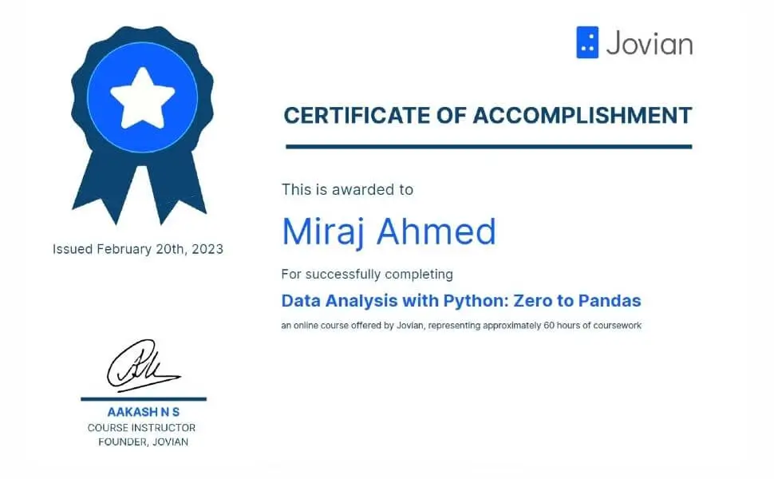

Project Details
IMDb Top 250 Highest Rated Movies: Exploratory Data Analysis
Project Overview
This page highlights the exploratory data analysis (EDA) I conducted on the IMDb Top 250 highest rated movies. The aim was to uncover factors that contribute to a movie's success, including genre, director, year of release, and runtime.
This project was capstone project for Data Analysis with Python: Zero to Pandas

Situation
I set out to explore and analyze the top 250 highest rated movies on IMDb. My goal was to understand what factors contribute to a movie's success, such as genre, director, year of release, and runtime.
Task
I used the Python libraries Pandas, NumPy, and Matplotlib to explore and analyze the dataset. The task involved examining the distribution of values in each column and creating visualizations to illustrate the relationships between different variables.
Actions:
1. Utilized Pandas, NumPy, and Matplotlib for data
analysis.
2. Examined the distribution of values in each column of the dataset.
3. Created visualizations to illustrate relationships between variables.
Results
Key Findings:
- Average Rating: The majority of movies in the dataset have ratings between 8.0 and 9.0, indicating general acclaim.
- Year of Release: The year 1995 had the most films in the top 250 list, followed by 2004 and 1957.
- Certificate Ratings: R and PG-13 are the most common ratings, suggesting that these movies are generally targeted towards mature audiences.
- Directors: Christopher Nolan, Akira Kurosawa, Stanley Kubrick, Steven Spielberg, and Martin Scorsese each have the most movies in the top 250 list. Hayao Miyazaki leads among non-English language directors.
- Runtime: Longer movies, particularly those with a duration of 180 minutes, are popular, indicating that audiences are willing to invest time in films that provide a rich experience.
- Genres: PG-13 is the most common certificate rating for genres like Action, Adventure, and Sci-Fi, while R is prevalent in Action, Crime, and Drama genres.
- Director Versatility: Successful directors are not confined to a single genre, suggesting that versatility and experimentation contribute to their success.
- Rating Trends: Average movie ratings fluctuate over the years, peaking in the 1970s and 1990s and being lower in the 1920s and 1930s. However, there is no significant difference between the average ratings of the last decade and the previous decade.
Conclusion
Most movies have ratings between 8.0 and 9.0, indicating a high level of acclaim. The year 1995 produced the highest number of top movies, with notable years being 2004 and 1957. R and PG-13 are common certificate ratings, with Christopher Nolan, Akira Kurosawa, Stanley Kubrick, Steven Spielberg, and Martin Scorsese having multiple entries in the top 250. The longest duration for top-rated movies is 180 minutes, and PG-13 is prevalent in genres like Action, Adventure, and Sci-Fi.